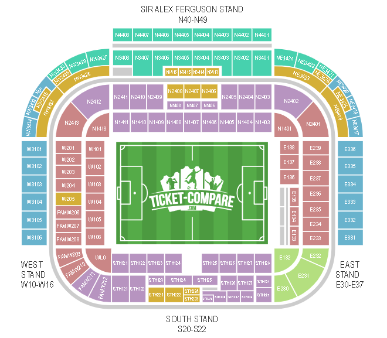

The official seating capacity of Old Trafford is 74,310, making it the largest club football stadium in the United Kingdom.
Stadium Structure & Key Features:
Pitch: The playing surface is a hybrid grass system (Desso GrassMaster), renowned for its durability and consistency.
Sir Alex Ferguson Stand (North Stand): The largest stand, with three tiers.
Stretford End (West Stand): The traditional home of the most vocal supporters, with two tiers
Sir Bobby Charlton Stand (South Stand): Features the players' tunnel, dugouts, and broadcast gantry.
East Stand: Includes extensive hospitality facilities and the museum.
Roof: A distinctive cantilevered roof design covers all seating areas without obstructive pillars, ensuring unrestricted views.
Facilities: The stadium complex includes the Manchester United Museum (the largest of its kind in world football), the Red Café, the Megastore, and multiple executive suites and lounges.

Future Development:
The club is actively progressing with plans for a world-class redevelopment of Old Trafford. The preferred option is a substantial rebuild of the North Stand and surrounding areas, which would modernize facilities, enhance fan experience, and increase stadium capacity. These plans are part of the wider Old Trafford Regeneration project in partnership with Trafford Council and Greater Manchester Combined Authority.
Carrington Training Complex
Official Name: Carrington Training Centre (often referred to as the Trafford Training Centre for sponsorship reasons).
Structure & Facilities:
Carrington is the daily headquarters for all Manchester United teams. The complex has undergone significant investment in recent years to restore it to an elite standard.
Specialized gyms, rehabilitation suites, and hydrotherapy areas.
A nutritionist-led canteen and chefs.
Advanced performance analysis theatres and meeting rooms.
A dedicated players' lounge and staff offices.
Academy Building: A separate, modern facility for the youth teams (U9s to U23s), mirroring the first-team setup to create a seamless pathway.
Women's Team Base: Fully integrated facilities within the Carrington complex, providing the women's first team with identical high-performance resources.
Training Pitches: Multiple outdoor pitches, including replica surfaces of Old Trafford and a dedicated goalkeepers' area. Several pitches are undersoil heated and have hybrid grass systems.
Indoor Facilities: A full-size indoor training pitch for use in all weather conditions.
Ownership & Operations:
The training complex is owned by the club and is a critical part of its football operations.
Football Structure: The football department is led by a Sporting Director, who oversees a unified strategy across men's, women's, and academy football.
Technical Staff: Each team (Men's First Team, Women's First Team, each Academy age group) has its own dedicated manager, coaches, performance and medical staff, all operating under a club-wide philosophy.
Key Principle: The modernized Carrington complex is designed to foster a high-performance culture and facilitate collaboration across all Manchester United teams under one "one-club" vision.